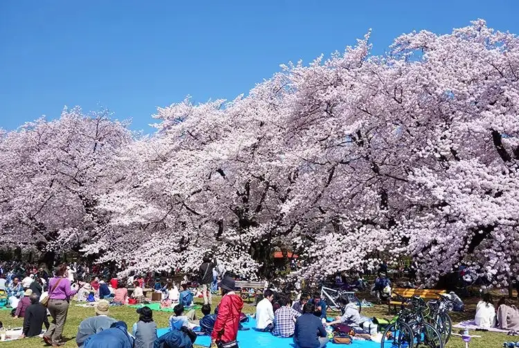

Koganei, Tokyo: things to do, food and stays
Koganei · Tokyo
Koganei
Highlighted on the Tokyo map.

Sights
Dining
Curry no Mise Pusan
カレーの店 プーさん

Japanese restaurant in Koganei, Tokyo.
Kujira Shokudo Nonowa higashikoganei ten
くじら食堂 nonowa 東小金井店

Noodle restaurant in Koganei, Tokyo.
Chuka Soba Issei
中華そば 一清

Noodle restaurant in Koganei, Tokyo.
Tsubame Sanjo Hojun Tei
燕三条 豊潤亭

Noodle restaurant in Koganei, Tokyo.
Goto Udon Bizenya
五島うどん びぜん家

Noodle restaurant in Koganei, Tokyo.
Maru Tsubaki Shokudo
◯つばき食堂

Noodle restaurant in Koganei, Tokyo.
Ippei Soba
一平ソバ

Noodle restaurant in Koganei, Tokyo.
Les Alternatives
Patisserie Boulangerie Les Alternatives

Sweets and bakery shop in Koganei, Tokyo.
Chuka Soba Men No Uta
中華蕎麦 麺ノ歌

Noodle restaurant in Koganei, Tokyo.
Jikaseimen Maruta
自家製麺 まる太

Noodle restaurant in Koganei, Tokyo.
Heiemon
平右衛門

Noodle restaurant in Koganei, Tokyo.
TERAKOYA
テラコヤ

European restaurant in Koganei, Tokyo.
Oven Mitten
オーブン・ミトン

Cafe in Koganei, Tokyo.
Koganei Taishoken
小金井大勝軒

Noodle restaurant in Koganei, Tokyo.
Sai no Tsuno
サイのツノ

Japanese restaurant in Koganei, Tokyo.
Enfukuya
えんふく家

Noodle restaurant in Koganei, Tokyo.
Nanafuku
ななふく

Noodle restaurant in Koganei, Tokyo.
Ramen Ninnikuya Koganei ten
らーめん にんにくや 小金井店

Noodle restaurant in Koganei, Tokyo.
Kou Zushi Ekimae ten
幸寿司 駅前店

Seafood restaurant in Koganei, Tokyo.
WISE MAN COFFEE Musashi koganei eki minamiguchi ten
WISE MAN COFFEE 武蔵小金井駅南口店

Cafe in Koganei, Tokyo.
Bakery Cafe Crown Musashi koganei ten
ベーカリー・カフェ・クラウン 武蔵小金井店

Cafe in Koganei, Tokyo.
WISE MAN COFFEE
ワイズマンコーヒー

Cafe in Koganei, Tokyo.
Hoka
宝華

Noodle restaurant in Koganei, Tokyo.
CHEERS BAGEL

Restaurant in Koganei, Tokyo.
Homer

European restaurant in Koganei, Tokyo.
kajitsuyakohi Kokubunji ten
果実屋珈琲 国分寺店

Cafe in Koganei, Tokyo.
Tantan-men Mubou
担々麺 無坊

Noodle restaurant in Koganei, Tokyo.
Fukugen Kyo
福源居

Chinese or Asian restaurant in Koganei, Tokyo.
Masatatsu Reservation
まさ竜

Meat restaurant in Koganei, Tokyo.
Ramen Sekiguchi
らーめん 関口

Noodle restaurant in Koganei, Tokyo.
Suzie-Q

Meat restaurant in Koganei, Tokyo.
Sichi-sai
七彩

Noodle restaurant in Koganei, Tokyo.
Kitchen Brown
キッチンブラウン

European restaurant in Koganei, Tokyo.
Menhanten Tawara Meshi
麺飯店 俵飯

Chinese or Asian restaurant in Koganei, Tokyo.
Yanagida Ya Musashi koganei ten
柳田屋 武蔵小金井店

Meat restaurant in Koganei, Tokyo.
Hamburg & Steak Hamburg mania
ハンバーグアンドステーキ ハンバーグマニア

Meat restaurant in Koganei, Tokyo.